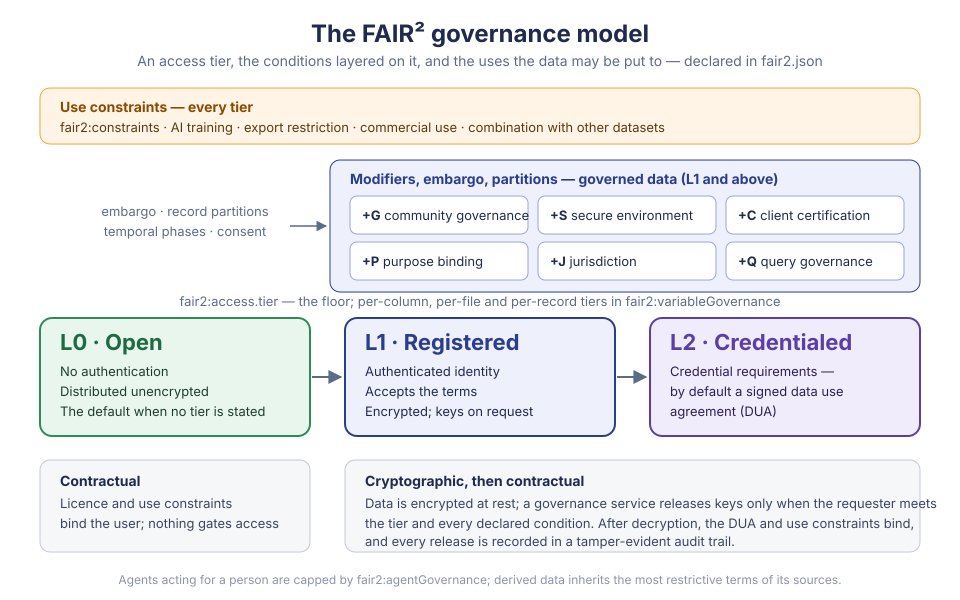

Governance Model¶
FAIR² is FAIR, made AI-ready and responsible: FAIR + AIR + RAI. The governance model is the responsible part made operational. It states how a dataset may be accessed, used, combined and derived — by people and by AI agents acting for them — and it is designed so that, for governed data, the statement is enforced rather than advisory.
A dataset's governance is declared in its fair2.json, in the optional
governance blocks, and enforced by governance services:
systems that encrypt governed data, decide every request against the declared
terms, release decryption keys only when they are met, and record what they
released. This page describes the model; Governance blocks
defines how a fair2.json states it.

Ten primitives¶
A dataset's governance is fully described by which of ten primitives are active and how each is set. They are orthogonal: any combination is valid, and each adds a requirement without weakening another.
| Primitive | Controls | Declared in |
|---|---|---|
| Access tier — L0, L1, L2 | Who may obtain the data at all: anyone, a registered identity, or a credentialed one | fair2:access.tier |
| +G Community governance | A community's approval before access — the CARE principle of Authority to Control | fair2:access.communityGovernance |
| +S Secure environment | Where the data may be processed: a secure human environment, compute-to-data, an attested enclave | fair2:access.environment |
| +C Client certification | Which software may receive the data | fair2:access.clientCertification |
| +P Purpose binding | Why the data may be used, as declared or verified purposes | fair2:access.purposeBinding |
| +J Jurisdiction | Where processing may take place | fair2:access.jurisdiction |
| +Q Query governance | How the data may be queried and linked: granularity, group sizes, joins with other data | fair2:access.queryGovernance |
| Use constraints | What the data may be used for: AI training, export, commercial use, combination | fair2:constraints |
| Embargo | When governed data is released | fair2:embargo |
| Record partitions | Which records a stricter tier applies to | fair2:variableGovernance.partitions |
Beyond them, the model governs AI agents (fair2:agentGovernance),
participant consent (fair2:consentGovernance), Indigenous data
sovereignty (fair2:indigenousGovernance) and access that changes over
time (fair2:temporalGovernance).
Three tiers¶
The tiers form a ladder, aligned with established controlled-access models such as those of GA4GH and PhysioNet.
| Tier | Requires | The data |
|---|---|---|
| L0 — Open | Nothing | Distributed unencrypted. Its terms — licence, citation, use constraints — bind the user but do not gate access. |
| L1 — Registered | An authenticated identity and acceptance of the terms | Encrypted; keys released on request. |
| L2 — Credentialed | The steward's credential requirements: by default a signed data use agreement (DUA), optionally institutional affiliation, ethics training, or a stronger identity assurance | Encrypted; keys released to credentialed requesters. |
The dataset's tier is a floor: a requester below it receives nothing, and one above it reaches every part of the dataset tagged at or below their own standing. A single dataset can therefore mix tiers — summary columns open at L0, diagnoses at L1, identifiers at L2; one directory of images at L2; the records of minors at L2 while adults' are at L1.
No tier means L0. A dataset that declares no governance, or no tier, is open. A governance service requires the tier to be stated before it publishes a dataset, so that open access is a decision rather than an omission.
Common compositions¶
| Composition | For example |
|---|---|
| L0 | Open data under a licence |
| L1 | Registered access: users identify themselves and accept the terms |
| L2 | Credentialed access under a data use agreement |
| L1 + G | Registered access with community approval — Indigenous health data |
| L2 + S | Credentialed access inside a trusted research environment — clinical trial data |
| L2 + C | Credentialed access through approved software only |
| L1 + P | Registered access for stated purposes — "academic research" or "public health" |
| L2 + J | Credentialed access processed only within the EU |
| L1 + Q | Registered access to aggregates; individual records at L2 |
| L2 + G + S + C + P + J + Q | Every safeguard at once |
How a request is decided¶
A governance service evaluates a request in a fixed order and stops at the first requirement that is not met, so a refusal names exactly what is missing.
- Withdrawn or erased? A retracted or tombstoned dataset is refused.
- Embargoed? Governed data is withheld until the embargo date.
- Which phase? Temporal governance may change the tier in force.
- Open? If everything requested is L0, it is granted here.
- Use constraints. A request to train AI, or for commercial use, that the constraints prohibit is refused.
- Tier and identity. The requester must reach the tier, present the required credentials and identity assurance, and come from an accepted identity provider.
- Modifiers. Community approval (+G) and governance-body or cultural-protocol clearance, then the environment (+S), the client's certificate (+C), the purposes (+P) and the jurisdiction (+J). Purposes can narrow the grant to the columns they authorise; partitions narrow it to the records the requester's tier reaches.
- Agents. An AI agent needs a verified delegation from a person, and is capped at its ceiling tier; a dataset may refuse agents altogether.
- Queries. Query governance (+Q) may refuse queries at the granted tier.
- Consent. Outstanding consent withdrawals can block the release, or exclude the withdrawn records.
The outcome is granted — with the tier granted, the constraints that apply and, where purposes limit it, the columns released — or a refusal stating what is required: credentials, governance approval, an environment, a certificate, a purpose, a jurisdiction, or a date.
What is enforced, and how¶
Governance holds in different ways at different points, and the model is explicit about which.
| Enforced by | |
|---|---|
| L0 data | The licence and use constraints — contractually. Nothing gates access. |
| Access to L1 and L2 data | Cryptography. The data is encrypted at rest; decryption keys are released only after every requirement is met, and only for the parts the requester may reach. Without keys the data is inert, wherever it is stored — on a governance service, in a public repository, on a shipped drive. |
| Tier separation, purpose-scoped columns, embargo, community veto | Key release: the keys for what a requester may not reach are never sent. |
| Use after decryption — purpose, AI training, export, redistribution | The data use agreement and use constraints, contractually; a certified client (+C) adds an accountability loop, since its certificate can be revoked. |
| Derived data | Inheritance: a derived dataset carries the most restrictive terms of all its sources. |
| What happened | A tamper-evident, hash-chained audit trail of every governance action and key release. |
Cryptographic enforcement ends at decryption. What a requester does with data they hold is bound by agreement, not by mathematics — the model states this rather than claiming more.
Keys can be held by a network of independent custodians, a threshold of whom must take part in every release, so that no single party — not even the service — can release them alone. With community governance, the community holds a share of that authority, which makes its veto technical rather than nominal.
Derived data¶
When data is transformed, aggregated or combined, its governance travels with it. A derived dataset inherits, for each constraint, the most restrictive value among its sources:
| Constraint | From least to most restrictive |
|---|---|
| AI training | allowed → restrictedWithConditions → prohibited |
| Commercial use | allowed → nonCommercialOnly |
| Export | none → aggregated-only → anonymized-only → derived-parameters-only |
| Query granularity | individual → grouped → aggregated → none |
| Purpose requirement | none → declared → verified |
| Linkage | unrestricted → sameStudy → approved → prohibited |
Allowed purposes and accepted jurisdictions narrow to those all sources accept; prohibited purposes accumulate from any source. Combining datasets is checked first against each one's combination policy.
Lifecycle and signatures¶
A governance declaration has a lifecycle:
draft → signed by the author → countersigned by the publisher → published
published ⇄ retracted
published → tombstoned
- Published governance is signed twice — by the author and by the publisher — with W3C Data Integrity proofs, so the terms are tamper-evident and attributable. It cannot be changed in place: new terms are a new version, which supersedes the old one for future requests.
- Retracted data is withdrawn by its author; access to governed data stops. Retraction can be reversed.
- Tombstoned data has been erased, for instance on a GDPR request: the descriptive metadata is stripped, access to governed data is refused, and its keys can be destroyed. Data that may need erasing should be at L1 or above — open copies already downloaded cannot be recalled.
AI agents¶
An AI agent acting for a person is governed in its own right. Its access is capped at a ceiling tier, whatever its principal could reach; it needs a verified delegation; and a dataset can limit how it works — directly, planning only, planning with human approval, algorithmic agents only — or refuse agents altogether. Only the refusal is enforced at key release; the other policies bind the software that runs the agent.
FAIR and CARE¶
The model supports, rather than certifies, the FAIR and CARE principles: it provides the mechanisms; stewards, communities and services supply the decisions.
| Principle | What the model provides |
|---|---|
| Findable | Governance metadata that travels with the dataset's identifier; version history |
| Accessible | Conditional access through open protocols — FAIR permits authentication and authorisation; metadata stays public while governed data is withheld |
| Interoperable | A shared, machine-readable governance representation; W3C DPV purposes; an ODRL export |
| Reusable | Licence, use constraints and agreements stating the conditions of reuse; signed provenance of the terms |
| Collective benefit | Community review of proposed access (+G); permitted and prohibited purposes (+P); agreement terms for benefit-sharing |
| Authority to control | Community approval with a technical veto; named governance bodies; cultural protocols such as seasonal restrictions |
| Responsibility | Signed declarations naming accountable parties; audit trails and lineage of downstream use |
| Ethics | Verified purposes, ethics approval, AI-use restrictions, consent controls |
A community-governed dataset can expose community-approved discovery metadata while its sensitive data stays at L1 or L2 under +G and +P, its reuse recorded through lineage and audit. Communities decide whether metadata itself reveals sensitive knowledge; being discoverable never authorises publishing everything.
Scope of this specification¶
This specification defines what a fair2.json declares and how a reader must
interpret it — Governance blocks — and nothing about how a
service implements enforcement: key hierarchies, custody, signing ceremonies,
audit formats and protocols are the governance service's. A service documents
which of the guarantees above it provides, and under which deployment.
This page follows the FAIR² governance model version 1.16.